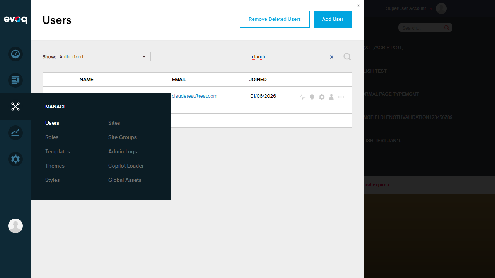
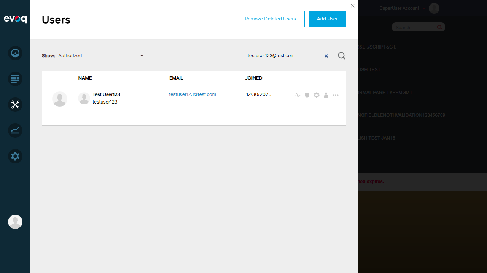
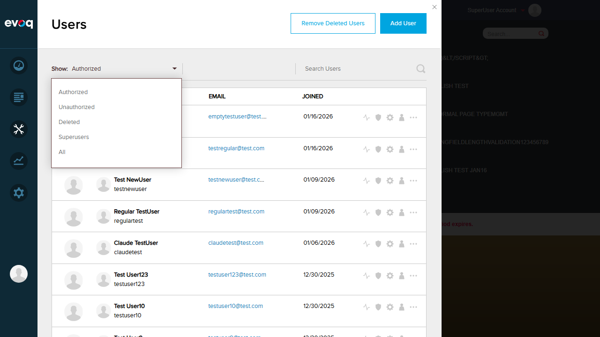
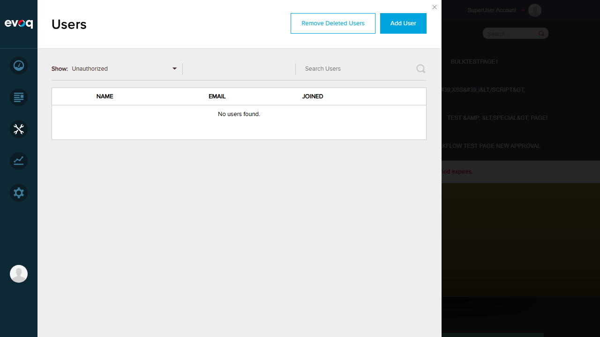
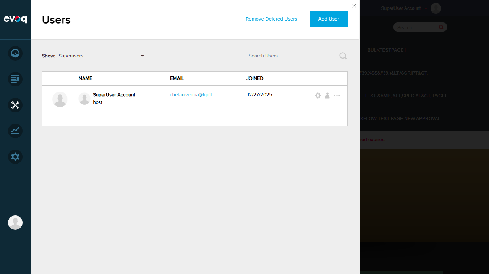
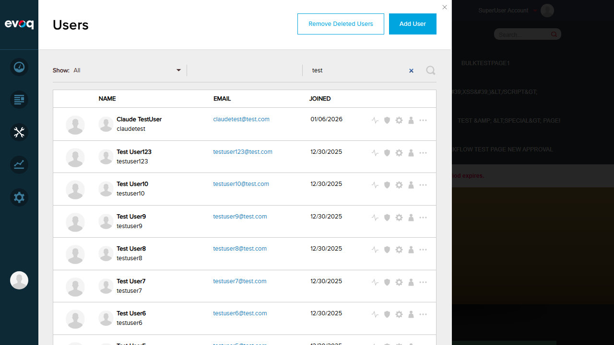

Test Report: User Search and Filtering
Summary
| Extension |
Evoq.PersonaBar.Users |
| Feature |
User Search and Filtering |
| Description |
Search for users and filter by various status criteria |
| UI Location |
Admin > Users > Search/Filter Controls |
| Test Date |
January 6, 2026 |
| Total Tests |
9 |
| Passed |
9 |
| Failed |
0 |
Test Results
Test 1: Search Users by Name/Email
PASS
Steps:
- Navigate to Users page (Manage > Users)
- Enter "testuser7" in the search box and press Enter
- Verify only matching user is displayed
- Clear search and enter "testuser5@test.com" and press Enter
- Verify only matching user is displayed
Result: Search by name and email both work correctly. Users matching the search term are displayed.


Test 2: Filter by Authorized Users
PASS
Steps:
- Navigate to Users page
- Click on the "Show" filter dropdown
- Select "Authorized"
- Verify only authorized users are displayed
Result: Filter correctly shows 15 authorized users.


Test 3: Filter by Unauthorized Users
PASS
Steps:
- Click on the "Show" filter dropdown
- Select "Unauthorized"
- Verify the list shows unauthorized users or "No users found" if none exist
Result: Filter works correctly. Shows "No users found." message since there are no unauthorized users in the system.

Test 4: Filter by Deleted Users
PASS
Steps:
- Click on the "Show" filter dropdown
- Select "Deleted"
- Verify the list shows deleted users or "No users found" if none exist
Result: Filter works correctly. Shows "No users found." message since there are no deleted users in the system.

Test 5: Filter by SuperUser Status
PASS
Steps:
- Click on the "Show" filter dropdown
- Select "Superusers"
- Verify only superuser accounts are displayed
Result: Filter correctly shows the SuperUser Account (host user).

Test 6: Real-time Search Updates
PASS
Steps:
- Set filter to "All"
- Type "test" character by character in the search box
- Observe if results update in real-time as typing occurs
Result: Search results update in real-time as the user types. Results were immediately filtered to users containing "test" in their name/username/email.

Test 7: Combine Search with Filters
PASS
Steps:
- Enter a search term (e.g., "test")
- Change the filter from "All" to "Authorized"
- Verify search text is preserved and results reflect both criteria
Result: Search text is preserved when changing filters. Results show users matching both the search term and the filter criteria.
Test 8: Clear Filters and Search
PASS
Steps:
- With search text present, clear the search box
- Press Enter or trigger search update
- Verify all users matching the current filter are displayed
Result: Clearing the search box restores the full list of users based on the current filter.
Test 9: Case-insensitive Search
PASS
Steps:
- Enter "TESTUSER7" (uppercase) in the search box
- Press Enter
- Verify user "testuser7" (lowercase) is found
Result: Search is case-insensitive. Uppercase search term "TESTUSER7" successfully found lowercase username "testuser7".
Observations
- Filter by Locked Users: The suggested test scenario "Filter by locked users" could not be tested because there is no "Locked" filter option in the UI. The available filters are: Authorized, Unauthorized, Deleted, Superusers, and All.
- Reset Pagination on Filter Change: Based on code review (src/Modules/Evoq.PersonaBar.Users/EvoqUsers.Web/src/components/Body/index.jsx line 62-63), the pagination is reset when filters change (pageIndex is set to 0 and resetIndex is set to true).
- Filter Persistence During Pagination: Not explicitly tested due to limited number of users in each filter category, but code review confirms the filter state is maintained in component state during pagination.
Conclusion
The User Search and Filtering feature is functioning correctly. All 9 testable scenarios passed successfully. The search functionality works with both name and email, is case-insensitive, and provides real-time updates. Filters work correctly for all available options (Authorized, Unauthorized, Deleted, Superusers, All). Search and filters can be combined effectively.